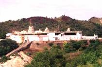

|
TIRUTTANI  Tiruttani Murugan temple is a famous Hindu temple, in South India, dedicated to Lord Muruga. The temple is located in the township of Tiruttani 35 km from Puttur.
Festivals Besides the monthly Krittikais which attract a large number of devotees to this shrine, the two outstanding annual festivals are the Aadi Krittikai and the 31st of December New Year Step Festival. The float festival is celebrated in the month of Aadi, Bhramotsavam in the month of Maasi, during which Valli Kalyanam is celebrated on the 8th day, and the Skanda Sashti is celebrated in the Tamil month of Aippasi. |